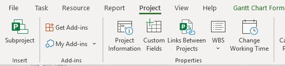
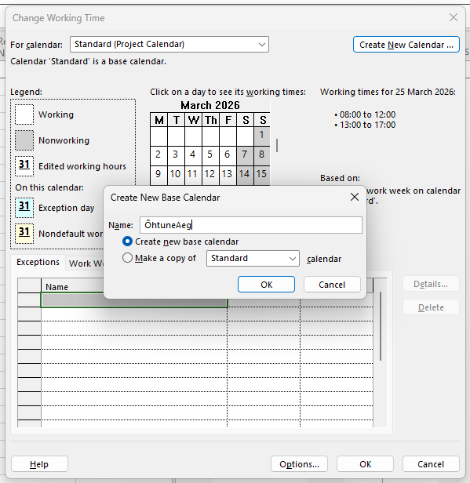
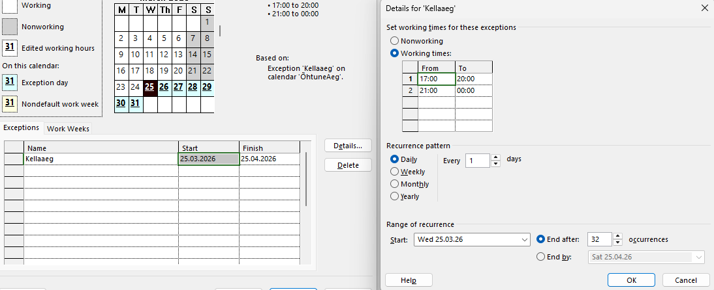
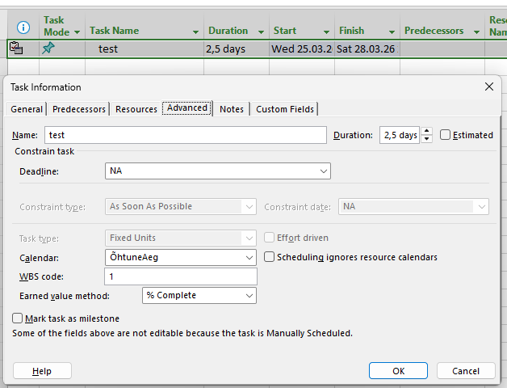

Juurdepääs seadetele
Ava oma MS Project ja liigu projekti konfigureerimise juurde:
- Mine Project vahekaardile peamisel ribal.
- Klõpsa Properties grupis nupule Change Working Time.

Tõhus projektijuhtimine algab õigest ajastamisest. Õpi looma oma projekti kalendrit vaid mõne minutiga.
Ava oma MS Project ja liigu projekti konfigureerimise juurde:

Ära piirdu vaid vaikimisi seadetega; loo kalender, mis vastab just sinu vajadustele:

Arvesta pühade, hooldustööde või muude eriliste puhkepäevadega:

Ühenda oma uus kalender projekti ülesannete ja ressurssidega:
